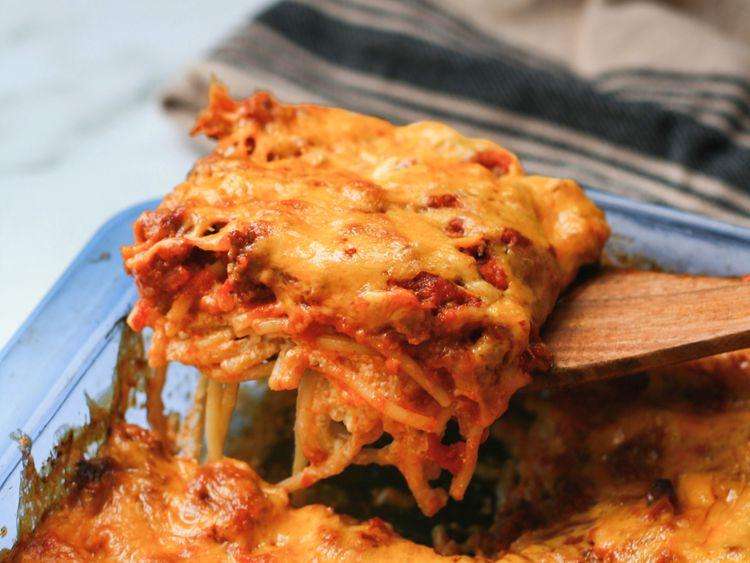

Spaghetti

Original Recipe
Description
Spaghetti goes hard. Apparently this recipe is a milllion dollar one.
I have not tried this spaghetti yet, but it sounds really good. Trust me
bro.
Ingredients
- 1 (8 ounce) package spaghetti
- 1 pound lean ground beef
- 1 (16 ounce) jar spaghetti sauce
- 1/2 cup butter, sliced - divided
- 1 (8 ounce) container cottage cheese
- 1 (8 ounce) package cream cheese, softened
- 1/4 cup sour cream
- 1 (8 ounce) package shredded sharp Cheddar cheese
Steps
-
Gather all ingredients and preheat the oven to 350 degrees F (175
degrees C)
-
Bring a large pot of lightly salted water to a boil. Cook spaghetti in
boiling water until cooked through but firm to the bite, about 8 to 12
minutes. Drain.
-
While the pasta is cooking, heat a large skillet over medium-high heat.
Cook and stir beef in the hot skillet until browned and crumbly, 5 to 7
minutes; drain and discard grease.
- Transfer to a bowl and mix in spaghetti sauce.
-
Place 1/2 of the butter slices into the bottom of a 9x13-inch casserole
dish.Spread 1/2 of the spaghetti into the dish.
-
Mix cottage cheese, cream cheese, and sour cream together in a bowl;
spread mixture over spaghetti.
-
Cover with remaining spaghetti and top with remaining slices of butter.
-
Pour ground beef mixture over spaghetti and spread in an even layer.
-
Bake in the preheated oven for 30 minutes. Spread Cheddar cheese on top
and continue baking until cheese has melted and is lightly browned,
about 15 minutes more.
- Enjoy!
Home